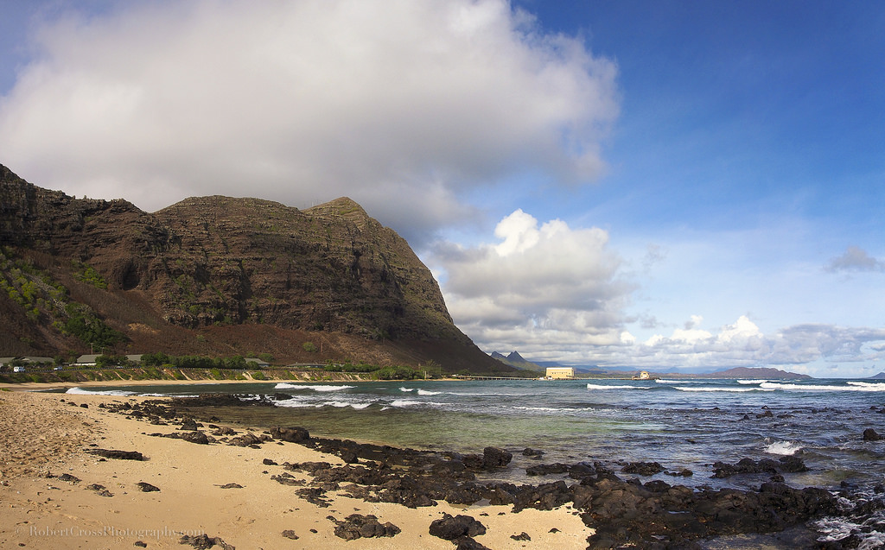

 Another thing that I like to do is go to the beach. What I like to do at the beach is:
My favorite beach is Makapu'u beach in Waimanalo. The reason it's my favorite is because it's close to where I live for starters. Also it's a good place to dive, especially when it's flat. Occasionally it has some waves which is good for surfers. Another reason I think it's good is that you can set up on the beach with your family and stay there all day, which is what me and my family usually do.